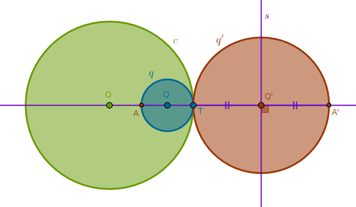
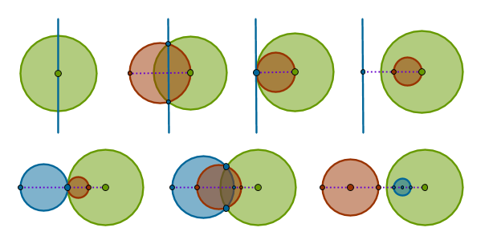

Circles
From the properties ICP10, 11, 12, 13, 14 we see that, for the most part, inversion with respect to a circle transforms a straight line into a circle that passes through the center of inversion.
It should also be obvious that the converse statements of the above properties are true. We will only formulate these properties here for the record and will omit their proofs since they all follow the same pattern:
- draw a straight line perpendicular to both circles to obtain a point \(P\)
- invert \(P\)
- choose a point on the given circle at random
- invert that point
- form triangles
- use the inversion identity ICC3 to prove that these triangles, of which one is right, are similar and hence the remaining triangle is right also, etc.
Property ICP15
Under the inversion with respect to a circle \(c(O, r)\) with positive power a circle \(q\) that passes through \(O\) and has exactly two common points with \(c\), \(F_1\) and \(F_2\), is transformed into a straight line \(l'\) passing through \(F_1\) and \(F_2\)
Property ICP16
Under the inversion with respect to a circle \(c(O, r)\) with negative power a circle \(q\) that passes through \(O\) and has exactly two common points with \(c\), \(F_1\) and \(F_2\), is transformed into a straight line \(l'\) passing through \(F'_1\) and \(F'_2\) which are the points diametrically opposite to \(F_1\) and \(F_2\)
Property ICP17
Under the inversion with respect to a circle \(c(O, r)\) with positive power a circle \(q\) that passes through \(O\) and has exactly one common point with \(c\), \(T\), is transformed into a straight line \(l'\) tangent to \(c\) at \(T\)
Property ICP18
Under the inversion with respect to a circle \(c(O, r)\) with negative power a circle \(q\) that passes through \(O\) and has exactly one common point with \(c\), \(T\), is transformed into a straight line \(l'\) tangent to \(c\) at \(T'\) which is a point diametrically opposite to \(T\)
Property ICP19
Under the inversion with respect to a circle \(c(O, r)\) a circle \(q\) that passes through \(O\) and has no common points with \(c\) is transformed into a straight line \(l'\) that has no common points with \(c\)
In the upcoming properties we will look at inversions of circles into circles. Please note that the center of the original circle does not invert into the center of its image directly. However, there exists an interesting relationship between the two and it is possible to invert one into the other not in one but in two steps. Read more on that in ICE9 towards the end of this tutorial.
Property ICP20
Under the inversion with respect to a circle \(c(O, r)\) a circle \(q(O, R)\) concentric with and located inside \(c\) is transformed into a circle \(q'(O, R')\) concentric with and located outside \(c\)
For any point \(A\) on \(c\) from ICC3 we have:
$$OA \times OA' = r^2$$ $$OA' = \frac {r^2}{R} = const = R'$$From ICP4 it follows that \(A'\) must be located outside \(c\) and the distance from all such points to \(O\) is the same - a definition of a circle. The converse property is proved in the similar way with an obvious remark that in the drawing below under inversion with negative power \(A\) inverts into \(B'\), \(B\) inverts into \(A'\), and conversely:
Property ICP21
Under the inversion with respect to a circle \(c(O, r)\) a circle \(q(O, R)\) concentric with and located outside \(c\) is transformed into a circle \(q'(O, R')\) concentric with and located inside \(c\):
Property ICP22
Under the inversion with respect to a circle \(c(O, r)\) with positive power a circle \(q(Q, R)\) that does not pass through \(O\) and has exactly two common points with \(c\), \(F_1\) and \(F_2\), is transformed into a circle \(q'(Q', R')\) not passing through \(O\) but passing through \(F_1\) and \(F_2\)
We note right away that since \(F_1\) and \(F_2\) are on the circumference of \(q\), according to ICP1 they are fixed and hence the curve into which \(q\) is transformed, whatever it is, must pass through these points.
Next, draw Line(\(O\), \(Q\)) until it intersects \(q\) at \(A\) and \(B\). Invert \(A\) and \(B\) with respect to \(c\) with positive power. Pick an arbitrary point \(C\) on \(q\) and also invert it with respect to \(c\) with positive power. Consider two pairs of triangles - \(\triangle OAC\) and \(\triangle OC'A'\) and \(\triangle OCB\) and \(\triangle OB'C'\). From ICC3 we have:
$$OA \times OA' = OC \times OC' = r^2$$ $$\frac {OA}{OC} = \frac {OA'}{OC'}$$ $$OB \times OB' = OC \times OC' = r^2$$ $$\frac {OB}{OC} = \frac {OB'}{OC'}$$From the first pair of equations we conclude that \(\triangle OAC\) and \(\triangle OC'A'\) are similar since they have two sides about the shared angle at \(O\) in the same proportion, B6P6. And, hence, these triangles have their corresponding angles equal:
$$\angle OCA = \angle OA'C' = \alpha$$From the second pair of equations we conclude that \(\triangle OCB\) and \(\triangle OB'C'\) are similar since they have two sides about the shared angle at \(O\) in the same proportion, B6P6. And, hence, these triangles have their corresponding angles equal:
$$\angle OCB = \angle OB'C' = \beta$$But \(\angle ACB\) is the angle in the semicircle of \(q\) and hence it is right (B3P31) and hence:
$$\angle OCB = \alpha + 90^{\circ} = \beta$$Next, we note that \(\angle OB'C'\) is exterior for \(\triangle B'C'A'\) and hence, (B1P32):
$$\angle OB'C' = \beta = x + \alpha$$And from the previous equation we have:
$$\beta = x + \alpha = \alpha + 90^{\circ}$$ $$x = 90^{\circ}$$And since \(C\) was picked at random, the locus traced by \(C'\) must be a circumference of a circle with \(B'A'\) as its diameter:
This suggests the following straight edge and compass construction:
1) Line(\(O\), \(Q\)) until it intersects \(q\) at \(A\)
2) Invert \(A\) with respect to \(c\) with positive power to locate \(A'\)
3) LineSegment(\(F_1\), \(A'\)) bisector \(s\) until it intersects Line(\(O\), \(Q\)) at \(Q'\)
4) Circle(\(Q'\), \(Q'F_1 = Q'A'\)) = \(q'\):
The proof of the above property, ICP22, is a template for proofs for all the remaining properties which we will only formulate for the record and highlight their key triangles. You are encouraged to go through the actual proofs yourself.
Property ICP23
Under the inversion with respect to a circle \(c(O, r)\) with negative power a circle \(q(Q, R)\) that does not pass through \(O\) and has exactly two common points with \(c\), \(F_1\) and \(F_2\), is transformed into a circle \(q'(Q', R')\) not passing through \(O\) but passing through \(F'_1\) and \(F'_2\) which are the points diametrically opposite to \(F_1\) and \(F_2\):

1) Line(\(O\), \(Q\)) until it intersects \(q\) at \(A\)
2) Invert \(A\) with respect to \(c\) with negative power to locate \(A'\)
3) Line(\(F_1\), \(O\)) until it intersects \(q\) at \(F'_1\)
4) LineSegment(\(F'_1\), \(A'\)) bisector \(s\) until it intersects Line(\(O\), \(Q\)) at \(Q'\)
5) Circle(\(Q'\), \(Q'F'_1 = Q'A'\)) = \(q'\):
Property ICP24
Under the inversion with respect to a circle \(c(O, r)\) with positive power a circle \(q(Q, R)\) that does not pass through \(O\) and touches \(c\) at \(T\) internally is transformed into a circle \(q'(Q', R')\) that touches \(c\) at \(T\) externally:
1) Line(\(O\), \(Q\)) until it intersects \(q\) at \(A\)
2) Invert \(A\) with respect to \(c\) with positive power to locate \(A'\)
3) LineSegment(\(T\), \(A'\)) bisector \(s\) through \(Q'\): \(Q'T = Q'A'\)
4) Circle(\(Q'\), \(Q'T = Q'A'\)) = \(q'\):

Property ICP25
Under the inversion with respect to a circle \(c(O, r)\) with positive power a circle \(q(Q, R)\) that does not pass through \(O\) and touches \(c\) at \(T\) externally is transformed into a circle \(q'(Q', R')\) that touches \(c\) at \(T\) internally
This property is just a converse of ICP24.
Property ICP26
Under the inversion with respect to a circle \(c(O, r)\) with negative power a circle \(q(Q, R)\) that does not pass through \(O\) and touches \(c\) at \(T\) internally is transformed into a circle \(q'(Q', R')\) that touches \(c\) at \(T'\) externally where \(T'\) is the point diametrically opposite to \(T\):
1) Line(\(O\), \(Q\)) until it intersects \(q\) at \(A\) and \(c\) at \(T'\)
2) Invert \(A\) with respect to \(c\) with negative power to locate \(A'\)
3) LineSegment(\(T'\), \(A'\)) bisector \(s\) through \(Q'\): \(Q'T' = Q'A'\)
4) Circle(\(Q'\), \(Q'T' = Q'A'\)) = \(q'\):
Property ICP27
Under the inversion with respect to a circle \(c(O, r)\) with negative power a circle \(q(Q, R)\) that does not pass through \(O\) and touches \(c\) at \(T\) externally is transformed into a circle \(q'(Q', R')\) that does not pass through \(O\) and touches \(c\) at \(T'\) internally where \(T'\) is the point diametrically opposite to \(T\)
This property is just a converse of ICP26.
Property ICP28
Under the inversion with respect to a circle \(c(O, r)\) a circle \(q(Q, R)\) that does not pass through \(O\), has zero common points with and is located inside \(c\) is transformed into a circle \(q'(Q', R')\) that does not pass through \(O\), has zero common points with and is located outside \(c\)
Again, verbally this property sounds the same for inversions with positive and negative powers. The only difference between them is the location of the image \(q'\). For an inversion with positive power \(q'\) and \(c\) are on the same side of \(O\) and for an inversion with negative power they are on the opposite sides of \(O\).
Here is a drawing for an inversion with negative power. You are encouraged to explore the positive power case yourself:
1) Line(\(O\), \(Q\)) until it intersects \(q\) at \(A\) and \(B\)
2) Invert \(A\) and \(B\) with respect to \(c\) to locate \(A'\) and \(B'\)
3) LineSegment(\(A'\), \(B'\)) bisector \(s\) through \(Q'\): \(Q'A' = Q'B'\)
4) Circle(\(Q'\), \(Q'A' = Q'B'\)) = \(q'\):

Property ICP29
Under the inversion with respect to a circle \(c(O, r)\) a circle \(q(Q, R)\) that does not pass through \(O\), has zero common points with and is located outside \(c\) is transformed into a circle \(q'(Q', R')\) that does not pass through \(O\), has zero common points with and is located inside \(c\)
This property is just a converse of ICP28.
Property ICP30
If \(q'(Q', R')\) is a circle inverse to \(q(Q, R)\) under the inversion with respect to a circle \(c(O, r)\) and \(d = OQ\) then:
$$R' = R \frac {r^2}{|d^2 - R^2|}$$Let us prove this property for an inversion with positive power:
From the drawing above it is obvious that:
$$R' = \frac {OA' - OB'}{2}$$ $$OA' = \frac {r^2}{OA}, OB' = \frac {r^2}{OB}$$ $$R' = \frac {r^2}{2} \Big(\frac {1}{OA} - \frac {1}{OB}\Big) = \frac {r^2}{2} \frac {OB - OA}{OA \times OB}$$ $$OA = d - R, OB = d + R$$ $$R' = \frac {r^2}{2} \frac {d + R - d + R}{(d - R)(d + R)} = \frac {r^2}{2} \frac {2R}{d^2 - R^2} = R \frac {r^2}{d^2 - R^2}$$When \(O\) is inside \(q\) (not shown in the drawing) then:
$$OA = R - d$$which means that we should use the absolute value of the difference of squares:
$$R' = R \frac {r^2}{|d^2 - R^2|}$$You can verify this property for inversion with negative power and various other configurations of circles yourself.
Before we move on to the next topic here is a summary of popular inversions with positive power:
and negative power:
\(\blacksquare\)